Sensenica
голографическая белизна и здоровье зубов
Вам захочется улыбаться!
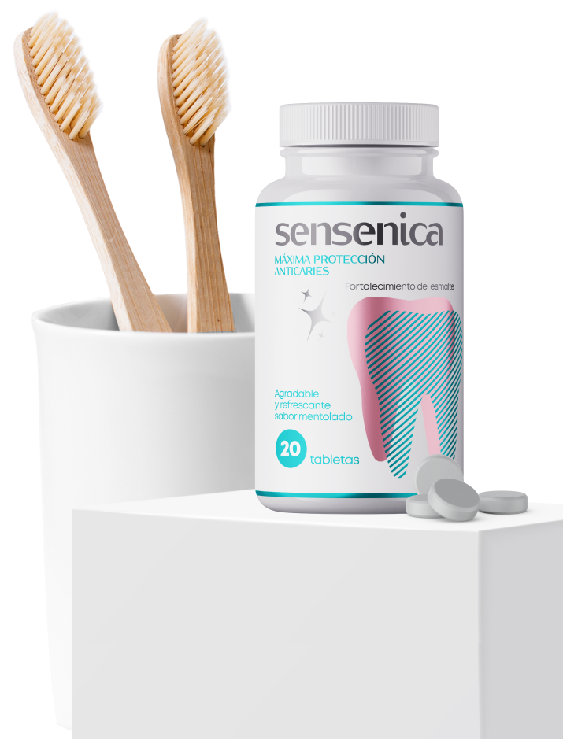
Бережное отбеливание на 5–7 тонов

Запатентованный нано-состав
Комплексная защита зубов
Поддержка здоровья полости рта
КАКОЙ УХОД – ТАКИЕ И ЗУБЫ
Зубы приобретают желтизну, когда мы становимся старше. Слой эмали истончается и разрушается под воздействием жевания и кислот из пищи и напитков. От этих процессов должна защищать зубная паста, однако в большинстве случаев это не происходит.
Поэтому с возрастом у большинства людей зубы желтеют, а в некоторых случаях пятна от пищи и цвет эмали вместе дают сероватый оттенок.

Желтизна

Зубной камень
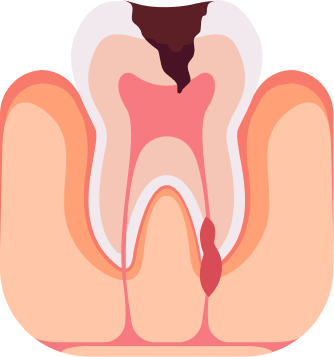
Кариес


Отбеливание под контролем
Большинство отбеливающих процедур крайне негативно сказываются на зубной эмали.
Абразивные вещества травмируют эмаль, истончают защитный слой и провоцируют образование кариеса и развитие патогенной микрофлоры в полости рта.
Лидер в области отбеливания зубов
Отбеливание зубов требует комплексного подхода. При использовании таблеток Sensenica осветление эмали достигается за счет действия ферментов и полирующих нано-частиц. Ионы кальция, быстро внедряясь в кристаллическую решетку эмали, снижают повышенную чувствительность зубов, а также эффективно защищают от кариеса.
Sensenica особенно рекомендована любителям кофе и чая, а также тем, кто курит.


Отбеливание на 7–10 оттенков за один курс использования*

Качественное очищение от налета

Реминерализация эмали
Устранение зубного камня
Снижение кровоточивости десен

Защита полости рта от бактерий и микробов
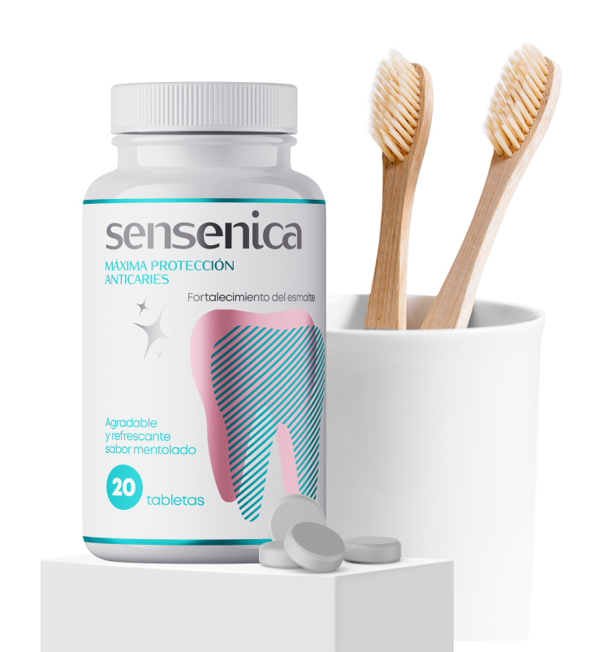
СПОСОБ ПРИМЕНЕНИЯ
Жевательные таблетки для отбеливания зубов следует использовать по схеме:
10/10
в течение первых 10 дней использовать два раза в день: утром и вечером после приема пищи

10
в течение следующих 10 дней сделать перерыв

2
повторить схему не менее 2-х раз
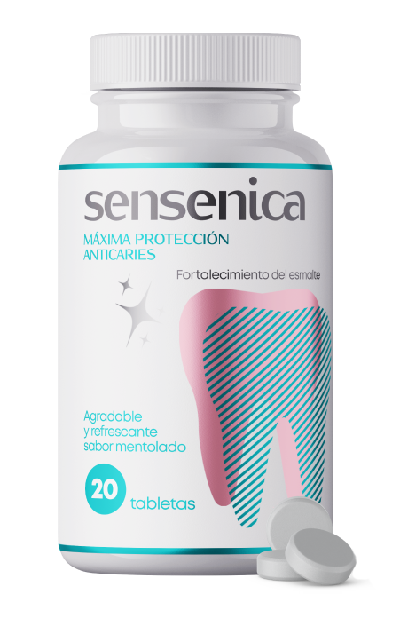

Запатентованная формула Sensalut выполнена на основе новейшей многоступенчатой очищающей системы, содержащей специальные очищающие полирующие гранулы. Благодаря особой структуре гранулы на начальном этапе чистки зубов качественно, быстро и безопасно удаляют зубной налет.
В процессе чистки зубов гранулы рассыпаются на более мелкие частицы, которые на заключительном этапе обеспечивают полировку эмали, придавая ей сверкающую белизну.
Качественное удаление окрашенного налета обеспечивается действием протеолитического фермента растительного происхождения.

Возвращает природную белизну

Предохраняет от образования налета и зубного камня
Обеспечивает комплексную защиту зубов и десен
состав отбеливающих таблеток
Sensenica
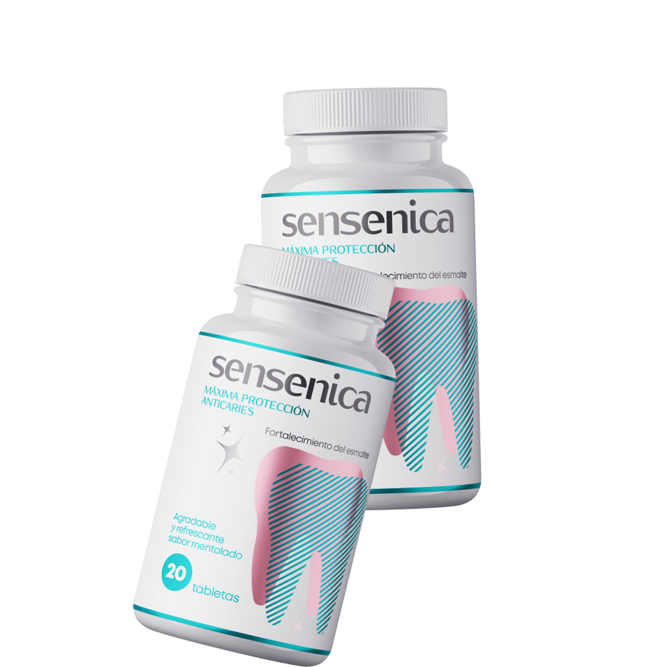
Какао-бобы
Защищают зубную эмаль от кариеса. Удаляют зубной налет, способны справиться даже с зубным камнем.
Папаин

Отлично расщепляет белковый слой, покрывающий поверхность эмали зубов и впитывающий в себя зубной налет, а также эффективно защищает от кариеса.
Каолин

Насыщает зубы микроэлементами, мягко полирует и предотвращает зубные отложения, имеет ранозаживляющее действие. Мягко полирует зубы, устраняя налет и уничтожая бактерии. Производит реминерализация за счет содержания солей и минералов. Обладает высокой отбеливающей способностью.
Кокос

Является природным антисептиком: входящая в его состав лауриновая кислота уничтожает бактерии, вызывающие развитие зубного налета и кариеса. Освежает дыхание и предотвращает развитие патогенной микрофлоры во рту, вызывающей неприятный запах изо рта.
Мнение специалиста

Луис Гарсиа, стоматолог-эстетист
С течением времени натуральный цвет зубов утрачивается. Зубы желтеют, несмотря на качественную профилактику и заботу о них. Этому способствует постоянный контакт с разнообразными бактериями, курение, воздействие на эмаль красителями (чай, кофе, газированные напитки и прочее). Sensenica – первый стоматологический продукт, который позволяет не только сохранить природную белизну зубов, но и сделать их на несколько тонов светлее, не прибегая к помощи стоматологов. Такой результат достигается благодаря ионам и нано-частицам, входящим в состав Sensenica. Использую этот продукт в своей практике и назначаю пациентам для домашнего отбеливания и защиты зубов.
ЗАКАЗАТЬ СО СКИДКОЙSensenica
голографическая белизна и здоровье зубов
Вам захочется улыбаться!
Бережное отбеливание на 5–7 тонов
Запатентованный нано-состав
Комплексная защита зубов
Поддержка здоровья полости рта
отзывы о sensenica
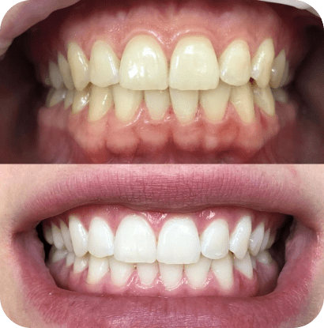
Марта Гонсалес
Зубы долго остаются гладкими и чистыми. На дёсны таблетки действуют нейтрально – кровоточивости не было замечено ни разу. Есть отбеливающие пасты и таблетки немного дешевле, но они и результат дают не особо впечатляющий в плане чистоты и предохранения от образования зубного налёта. У меня был случай с неудачной зубной пастой - спустя несколько часов после чистки опять появлялся неприятный налёт на зубах. Словно и не чистились зубы вовсе! С Sensenica подобного не случалось ни разу!
Хосе Эрнандес
Отбеливающие таблетки Sensenica мне пришлись по душе. Во-первых, это оказалось довольно удобно, во-вторых они очень хорошо очищают зубы и устраняют неприятных запах изо рта. Покупал две упаковки, мне их хватило, чтобы зубы стали на несколько тонов белее. Покупал по акции, вышло очень дешево.
Педро Рамирес
После утренней чистки зубов налёт в течение дня почти не образуется. Даже если усиленно кушать и пить... Только ближе к вечеру (вернее даже к ночи) чувствуется, что ротовая полость требует внимания и желает, чтобы её привели в порядок! Sensenica хорошо очищает зубы, удаляет уже образовавшийся налёт и предотвращает потемнение эмали.